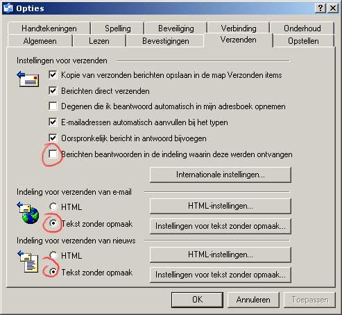
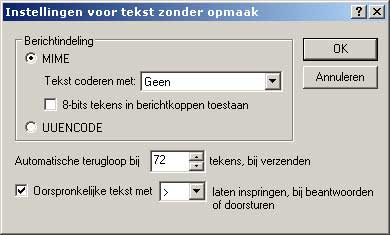

Op deze pagina heb ik een aantal gouden 100%-water-en-schokbestendige tips bijeengescharreld om het e-mailverkeer een stuk aangenamer en eleganter te laten verlopen. Ze maken deel uit van de zogenaamde Netiquette. Deze tips kan je niet alleen gebruiken voor mailinglists, forums en nieuwsgroepen, maar ook voor je persoonlijke correspondentie. Je kan ver gaan in het absoluut conform maken van je berichten aan de geldende standaarden, maar dat is iets wat niemand ooit zal verwachten van de gemiddelde gebruiker. Als je de onderstaande regeltjes toepast op je uitgaande berichten zul je zelden of nooit nog commentaar krijgen. Neem de tijd om ze door te nemen. Het loont!
NOOT: Dit document is de volledig uitgewerkte handleiding van mijn verzamelde tips.
Vermeld zo veel mogelijk je naam (of nickname) en je e-mailadres en/of website onderaan je boodschap. Dat maakt het voor je collega's makkelijker om te antwoorden of om jouw e-mailadres terug te vinden. Gebruikers van Outlook kunnen bij elk bericht automatisch een 'handtekening' laten invoegen (gebruikers van Hotmail kunnen dit ook: zie daarvoor 'Opties' in je mailbox.) In een vertrouwde omgeving, zoals een mailinglist, kan je natuurlijk deze regel af en toe eens aan je laars lappen. Vergeet hem echter nooit als je naar een instantie, een onbekende of naar een nieuwsgroep/forum mailt!
Onderteken je bericht altijd geheel onderaan het bericht. Helaas zit er een fout in de populaire Microsoft programma's, waardoor de ondertekening onterecht boven de aangehaalde tekst wordt gezet. Met Quotefix valt ook deze fout te herstellen (zie TIP4.).
Outlook Express, Hotmail e.a. stellen e-mailberichten automatisch in het Html-formaat op. Dat maakt ze ontzaglijk veel groter en bovendien onleesbaar voor sommige mailprogramma's en webgebaseerde mailsystemen (kijk hier zelf maar eens). Daarom wordt mailen met Html vaak verboden op mailinglists (in de nieuwsgroepen altijd!). Er zijn nog belangrijke nadelen aan verbonden: zo zijn Html-berichten de belangrijkste verspreiders van virussen, kunnen aanbieders van mailinglists logge reclameboodschappen aan je mails toevoegen, en wordt de broncode van je mails zo goed als onleesbaar. Html is bedoeld voor webpagina's, niet voor e-mail. Kleurtjes en speciale fonts zijn meestal nergens voor nodig. Opnieuw een schitterend initiatief van Microsoft om zelfs aan de basis van het internet te foefelen (om nog maar te zwijgen van hun ridicule 'leesbevestigingen') ...
HTML uitschakelen in Hotmail
HTML uitschakelen in Yahoo!
HTML uitschakelen in Microsoft Outlook (2000/XP)
HTML uitschakelen in Outlook Express


Je kent ze wel: de doorgestuurde mopjes die nauwelijks te lezen vallen door de vele quote-marks à la ...
>>>>Gebruik
>> een pc
>>>>>>zeg
>>gen z >>>>>>e dan!
(Slechte) mailprogramma's maken een rommeltje van je tekst door het afbreken van de tekstregels en het bijplaatsen van quote-tekens (>). Steek een stokje voor deze Babylonische ascii-verwarring door het bericht dat je wil doorsturen te kopiëren uit de mail die je ontvangen hebt en het te plakken in de nieuwe mail om door te sturen. Ook Hotmail-gebruikers kunnen kopiëren en plakken!
Dit is niet ideaal omdat je geen onderscheid kan maken tussen jouw tekst en die van het eerste bericht. De ideale oplossing zou een programma zijn dat de quote-structuur correct toepast. Die ideale oplossing bestaat! Je kan voor Outlook een steengoed herstelprogramma installeren. Er is een versie voor Outlook Express en voor Office Outlook 2000/XP. Je leest het best ook eens de handleiding die bij het kleine programmatje zit, maar dat is niet absoluut noodzakelijk om al een groot deel van de Microsoft-bugs te lijf te gaan. Gewoon installeren dus (setup - ok - blabla - klaar!)
Virusmeldingen via e-mail zijn in 90% van de gevallen vals. Laat je niet vangen! Indien er werkelijk een nieuw gevaarlijk virus opgang maakt, dan zal je dat slechts via één betrouwbare bron te weten komen: het Belgisch Instituut voor postdiensten en telecommunicatie. Je hoeft je alleen maar in te schrijven op hun mailinglist. Bovendien zou iedereen een goede virusscanner moeten hebben die elke dag automatisch nieuwe virusdefinities afhaalt. Op deze manier ben je optimaal beschermd.
De bedoeling van kettingmails is vaak nobel. Maar ik moet iedereen die in de kracht ervan gelooft teleurstellen. Dergelijke initiatieven zijn nimmer een lang leven beschoren. Na een paar rondjes onder 'de vrienden' wordt elke boodschap onleesbaar door het veelvuldig verkeerd quoten (zie daarvoor TIP 4). Bovendien bestaat er geen enkele controle over de inhoud en kan iedereen de boodschap manipuleren. Een snoodaard kan zelfs de verzamelde adressen gebruiken voor reclamedoeleinden (spam)! Doe er dus niet aan mee...
Neem deze regels in acht om je e-mailverkeer vlotter en schoner te laten verlopen. Vooral op mailinglists en forums is het belangrijk dat iedereen zich aan deze regels houdt. Het bespaart u en mij een hoop nutteloze of moeilijk leesbare boodschappen. Netiquette is een doe-woord!